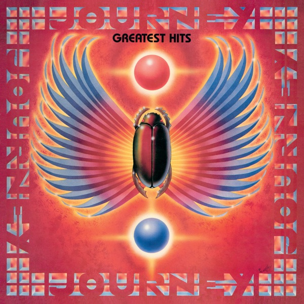

Greatest Hits
Journey
Upgrade idea: This 2024 Chris Bellman remaster is the current definitive vinyl version. No Mobile Fidelity or Analogue Productions edition exists for this title.
- Original release
- 1988
- Pressing year
- 2024
- Country
- US
- Format
- 2× Vinyl LP, Compilation, Reissue, Remastered, Stereo (Gatefold, 180g)
- Label / Cat#
- Legacy – 19658823041 / Columbia – 19658823041
- Genres
- Rock
- Styles
- AOR, Arena Rock
- Discogs release
- 29620654
- Discogs master
- 92802
- Apple Music
- Greatest Hits (2024 Remaster)
- Wikipedia
- Greatest Hits
Production notes
Tracklist (Discogs)
| A1 | Only the Young | 4:03 |
| A2 | Don't Stop Believin' | 4:09 |
| A3 | Wheel In The Sky | 4:10 |
| A4 | Faithfully | 4:25 |
| B1 | I'll Be Alright Without You | 4:33 |
| B2 | Any Way You Want It | 3:21 |
| B3 | Ask The Lonely | 3:53 |
| B4 | Who's Crying Now | 5:00 |
| C1 | Separate Ways (World's Apart) | 5:23 |
| C2 | Lights | 3:09 |
| C3 | Lovin', Touchin', Squeezin' | 3:49 |
| C4 | Open Arms | 3:17 |
| D1 | Girl Can't Help It | 3:49 |
| D2 | Send Her My Love | 3:53 |
| D3 | Be Good To Yourself | 3:50 |
| D4 | When You Love A Woman | 4:10 |
Tracklist (Apple Music)
| 1 | Only the Young (2024 Remaster) | 4:04 |
| 2 | Don't Stop Believin' (2024 Remaster) | 4:10 |
| 3 | Wheel In the Sky (2024 Remaster) | 4:14 |
| 4 | Faithfully (2024 Remaster) | 4:26 |
| 5 | I'll Be Alright Without You (2024 Remaster) | 4:34 |
| 6 | Any Way You Want It (2024 Remaster) | 3:23 |
| 7 | Ask the Lonely (2024 Remaster) | 3:54 |
| 8 | Who's Crying Now | 5:01 |
| 9 | Separate Ways (Worlds Apart) [2024 Remaster] | 5:26 |
| 10 | Lights (2024 Remaster) | 3:10 |
| 11 | Lovin', Touchin', Squeezin' (2024 Remaster) | 3:52 |
| 12 | Open Arms (2024 Remaster) | 3:19 |
| 13 | Girl Can't Help It (2024 Remaster) | 3:51 |
| 14 | Send Her My Love (2024 Remaster) | 3:54 |
| 15 | Be Good to Yourself (2024 Remaster) | 3:52 |
| 16 | When You Love a Woman (2024 Remaster) | 4:08 |
Personnel & credits
- Alton Kelley — Artwork, Cover
- Kevin Elson — Coordinator [Production Coordinator]
- Neal Schon — Guitar
- Chris Bellman — Lacquer Cut By
- Frank Harkins — Layout, Design
- Steve Perry — Lead Vocals
- Herbie Herbert Management Inc. — Management
- Bob Ludwig — Mastered By [Original Compilation]
- Hiro Ito — Photography By
- Jim Welch (4) — Photography By
- John Werner — Photography By
- Journey Archives — Photography By
- Mark Weiss (3) — Photography By
- Michael Marks (2) — Photography By
- Michael Ochs Archives — Photography By
- Neil Zlozower — Photography By
- Paul Natkin — Photography By
- Photo Reserve Inc. — Photography By
- Sam Emerson — Photography By
- William Hames — Photography By
- Geoff Workman — Producer
- Kevin Elson — Producer
- Mike Stone — Producer
- Roy Thomas Baker — Producer
- John Jackson (11) — Reissue Producer
- Steve Perry — Reissue Producer
- Adam Ayan — Remastered By
- Cyndy Poon — Research [Memorabilia And Expertise Courtesy Of]
- Lora Beard — Research [Memorabilia And Expertise Courtesy Of]
Identifiers
- Barcode: 1 96588 23041 7 (Text)
- Barcode: 196588230417 (Scanned)
- Rights Society: ASCAP
- Rights Society: BMI
- Matrix / Runout: 19658823041-A III CB 42840.1(3)... (Side A Runout, Variant 1)
- Matrix / Runout: 19658823041-B III CB 42840.2(3)... (Side B Runout, Variant 1)
- Matrix / Runout: 19658823041-C I̶I̶I̶IV CB 42840.3(3)... (Side C Runout, Variant 1)
- Matrix / Runout: 19658823041-D V CB 42840.4(3)... (Side D Runout, Variant 1)
- Matrix / Runout: 19658823041-A III CB 42840.1(3)... (Side A Runout, Variant 2)
- Matrix / Runout: 19658823041-B III CB 42840.2(3)... (Side B Runout, Variant 2)
- Matrix / Runout: 19658823041-C II CB 42840.3(3)... (Side C Runout, Variant 2)
- Matrix / Runout: 19658823041-D I CB 42840.4(3)... (Side D Runout, Variant 2)
Notes
"Remastered 2024 for vinyl from the original stereo flat master tapes".
From the Albums:
[m80582] (1978)
[m80587] (1979)
[m80585] (1980)
[m80583] (1981)
[m80594] (1983)
[m92806] (1983)
[m82462] (1985)
[m80600] (1986)
[m356862] (1996)
Notes & discrepancies
- Release year differs: your pressing=2024, Apple Music edition=1988. Apple Music typically streams the most recent remaster.
Greatest Hits is Journey’s definitive compilation, originally released in 1988 on Columbia Records and one of the best-selling greatest hits albums in US history — certified 15× platinum by the RIAA. It surveys the band’s commercial peak from the late 1970s through the mid-1980s, capturing the Steve Perry-fronted lineup at the height of their arena rock dominance. “Don’t Stop Believin’,” “Anyway You Want It,” “Open Arms,” “Faithfully,” “Wheel in the Sky,” “Lovin’, Touchin’, Squeezin’” — the sequencing is nearly flawless, and Perry’s tenor remains one of the most distinctive and powerful voices in rock history.
The album’s longevity is remarkable — “Don’t Stop Believin’” in particular has transcended its era entirely, becoming one of the most streamed classic rock tracks in the streaming age following its use in The Sopranos finale and Glee. Journey’s brand of melodic hard rock and power ballads defined FM radio in the early 1980s, and this compilation distills that era perfectly.
The 2024 remastered reissue (Columbia / Legacy catalog 19658823041) presents the compilation with a fresh 2024 remaster, pressed as a double LP on standard weight vinyl. The matrix codes
19658823041-A III CB 42840.1(3)identify the CB cutting engineer — likely Chris Bellman of Bernie Grundman Mastering, one of the most respected mastering engineers in the business, known for his work on countless classic rock and audiophile reissues.About this 2024 US pressing (2× Vinyl, LP, Compilation, Remastered): Columbia / Legacy catalog 19658823041, 2024 remastered reissue. Double LP. Matrix 42840.1 / CB (Chris Bellman, Bernie Grundman Mastering). Barcode 196588230417.